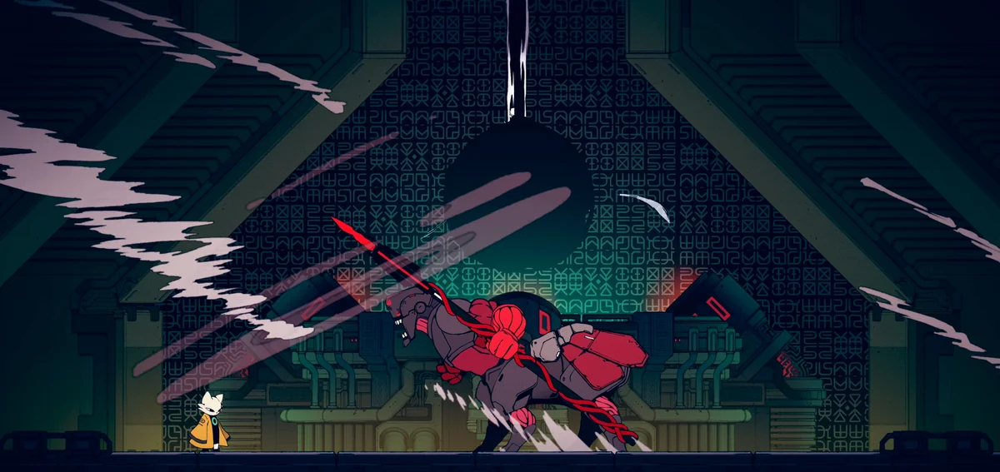

Nine Sols y el ritmo del combate
Cómo un juego de acción convierte cada intento fallido en una pista para el siguiente combate.

Un jefe levanta el arma y deja una pausa antes del golpe. Si Yi se defiende demasiado pronto, ese gesto pierde su utilidad. Nine Sols, una aventura de acción en dos dimensiones de RedCandleGames, construye buena parte de su combate alrededor de ese momento. La dificultad empieza por leer lo que sucede en pantalla y aprender cuándo actuar.
La defensa tiene su propio ritmo
El desvío, también llamado parry, recompensa la precisión. La animación avisa de que se acerca un ataque, pero el golpe puede llegar después de una pausa. En una secuencia de varios golpes, ese intervalo cambia. El jugador aprende a mirar la postura del enemigo y a reconocer el ritmo de la secuencia antes de decidir cuándo responder.
El sistema también conecta la defensa con el contraataque. Los desvíos permiten acumular energía que Yi puede usar con sus talismanes. Esa conexión da sentido a esperar. Una buena defensa abre la posibilidad de atacar después, siempre que haya margen para hacerlo.

Qué queda de un intento fallido
Al principio, una derrota puede dejar la impresión de que todo ocurre demasiado deprisa. Tras varios intentos, es posible reconocer qué ataque se repite, cuánto dura la pausa y en qué momento aparece una oportunidad para responder. El progreso se nota antes de vencer, porque ciertas partes del combate empiezan a resultar familiares.
La repetición funciona cuando permite comprobar una hipótesis. Si retrasar el desvío cambia el resultado, el juego ha dado una pista que se puede aprovechar en el siguiente intento. Ese vínculo entre la señal y la respuesta hace que una pelea difícil también pueda enseñar.